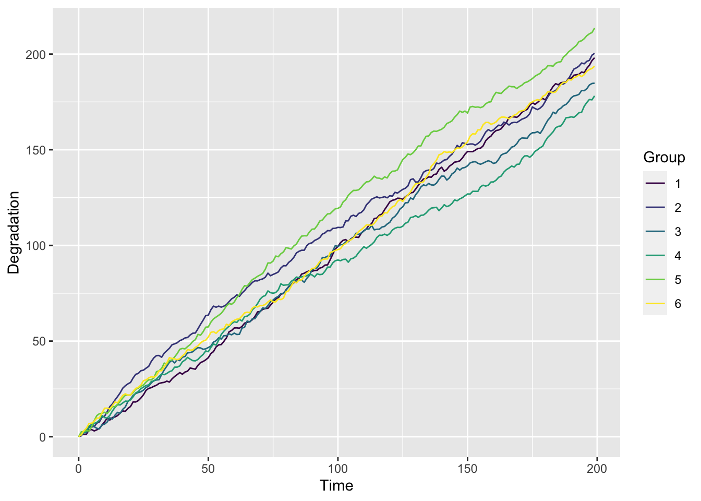
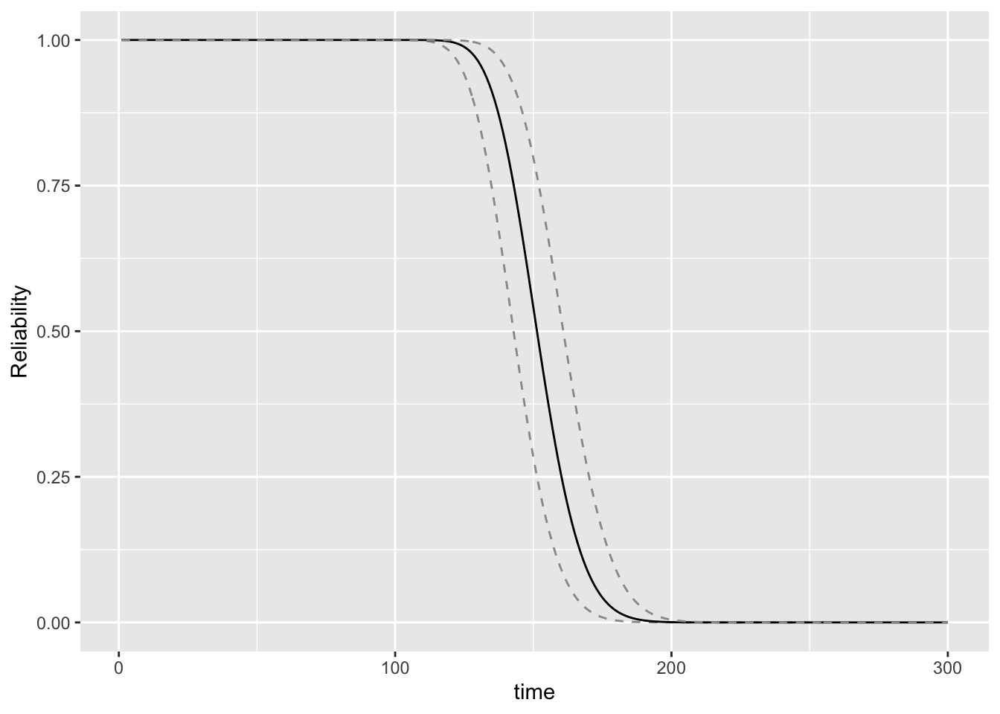
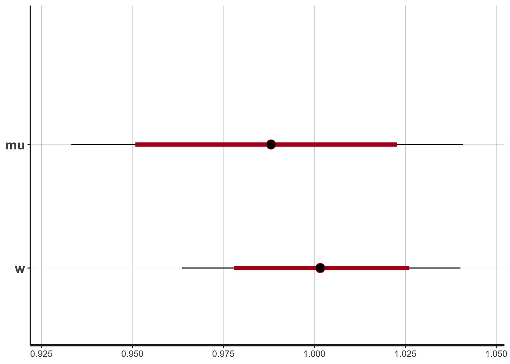
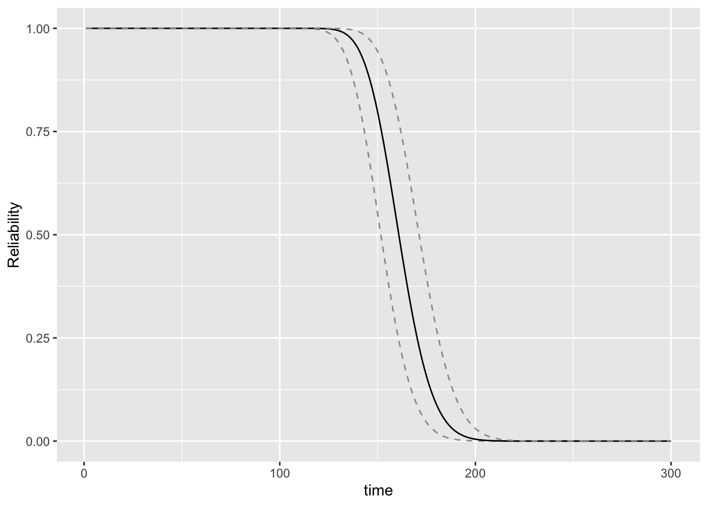
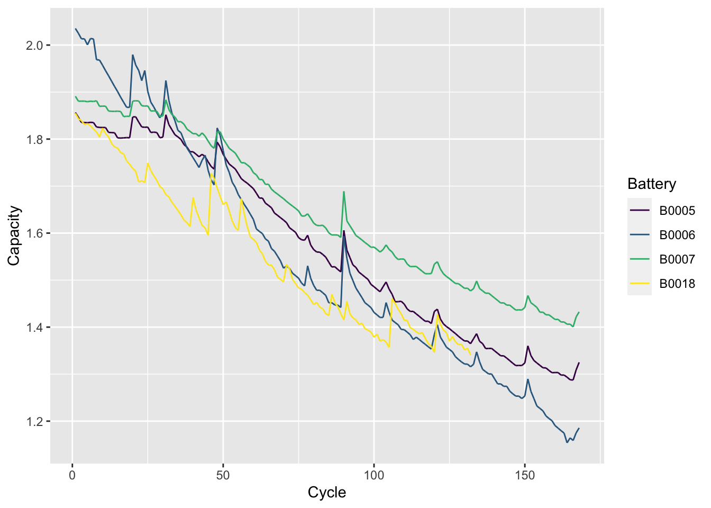
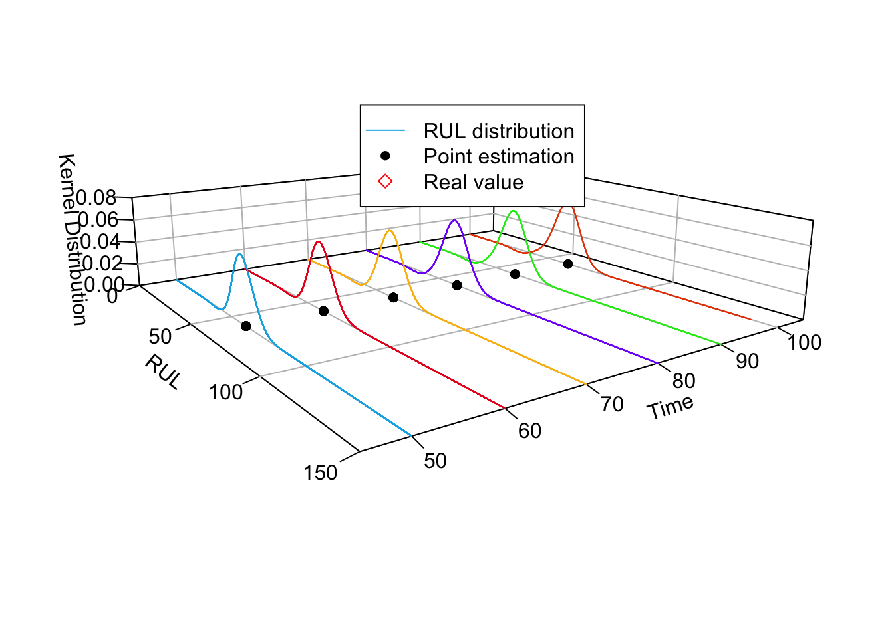
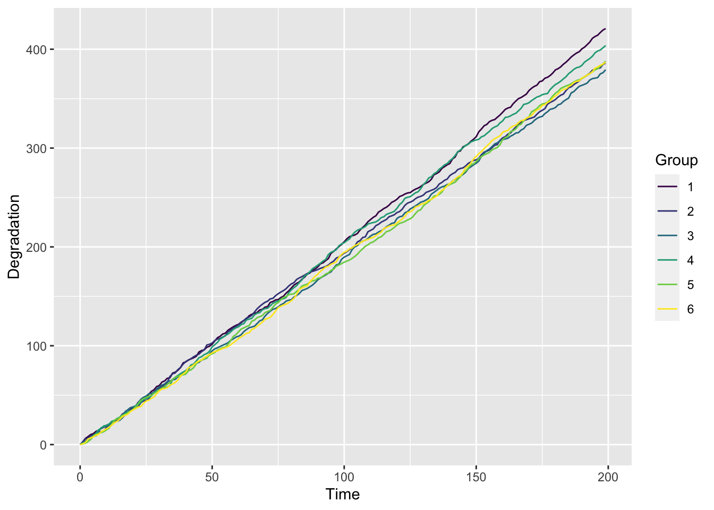

退化过程模型综述
1. 介绍
近年来，基于退化的可靠性技术在模型、方法和应用等方面得到快速发展。其中，在基于退化的可靠性模型方面，以随机过程理论为基础，根据工程需要，并考虑模型的简明性、实用性和适用性，已经提出了多种类型的模型，包括：
退化轨道模型（如 Paris 模型、随机斜率/截距模型、幂律模型、反应论模型）
基于 Wiener 过程的模型
基于 Gamma 过程的模型
累积损伤模型(主要是基于混合 Poisson 过程的模型）
更为一般的纯跳过程模型（如Levy.过程模利）和扩散过程模型（如随机微分方程模型）等。
在基于退化的可靠性建模方法，以数理统计理论为基础，针对模型和退化数据的类型，研究矩估计、极大似估计及 EM 算法、Bayes 估计及 MCMC算法、基于滤波的状态估计方法，以及非参数和半参数方法等，解决模型辨识和修正问题;
采用似然比检验、Bayes 因子分析等方法进行模型验证;
采用均方误差（MSE）、Akaike 信息准则(AIC)、Bayes 信息准则(BIC)、偏差信息准则(DIC)等进行模型优良性检验。
在基于退化的可靠性技术应用方面，针对机械零部件（如轴承、润滑系统）、半导体器件（如功率MOS器件）、机电部件（如感应电动机）、光电器件(如太阳电池、激光器、LED)、电子器件（如电容、蓄电池）等的退化失效过程，开展退化过程建模、可靠性评估、剩余寿命预测、可靠性试验设计：特别是加速退化试验方案设计的研究。
2. 退化轨道模型
暂时不考虑
3. Wiener 退化过程模型
Wiener 过程由于其简单的结构和比较丰富的研究成果，成为目前退化过程建模中 应用最为广泛的一种模型。
Wiener 退化过程的首达时间分布具有解析形式，便于对产品寿命和可靠度的分析和计算。
Wiener 退化过程可以描述产品退化过程的时间不确定性，而且比较容易处理测量数据存在误差的情况。
通过对经典 Wiener 过程的参数引入随机性，使得 Wiener 退化过程能够描述个体差异，并且一般不会给模型参数的估计带来更多的困难。
对 Wiener 退化过程及其观测过程所构成的状态空间模型，可以采用 Kalman 滤波技术进行处理，为产品在线寿命预测、视情维修决策等提供了可行的算法和实现途径。
3.1 带漂移的 Wiener 过程
称 \(\{X(t), t \geqslant 0\}\) 是漂移参数为 \(\mu\) 、扩散参数为 \(\sigma\) 的 (一元) Wiener 过程, 若
\(X(0)=0\)。
\(\{X(t), t \geqslant 0\}\) 有平稳独立增量。
\(X(t)\) 服从均值为 \(\mu t\),方差为 \(\sigma^2 t\) 的正态分布。
根据上面的定义, 可以将带漂移的 Wiener 过程表示为下面的形式: \[ X(t)=\mu t+\sigma B(t) \] 式中: \(\{B(t)\}, t \geqslant 0\) 是标准 Wiener 过程或标准布朗运动过程。
根据定义, 对带漂移的 Wiener 过程, 显然有如下的性质成立:
（1）时刻 \(t \sim t+\Delta t\) 之间的增量服从正态分布, 即 \(\Delta X=X(t+\Delta t)-X(t) \sim\) \(N\left(\mu \Delta t, \sigma^2 \Delta t\right)\) 。
- 对任意两个不相交的时间区间 \(\left[t_1, t_2\right],\left[t_3, t_4\right], t_1<t_2 \leqslant t_3<t_4\), 增量 \(X\left(t_4\right)-X\) \(\left(t_3\right)\) 与 \(X\left(t_2\right)-X\left(t_1\right)\) 相互独立。
如果产品的性能退化过程是一元 Wiener 过程,假设其运行到时刻 \(\tau\) 仍末失效, 且 当前性能退化量为 \(x_\tau\left(x_\tau<l\right)\), 则产品的剩余寿命 \(T_1\) 可以表示为 \[ T_1=\inf \left\{t \mid X(t+\tau) \geqslant l, X(\tau)=x_\tau, t \geqslant 0\right\} \] 由一元 Wiener 过程的独立增量性质和齐次马尔可夫性得到 \[ \begin{aligned} T_1 &=\inf \left\{t \mid X(t+\tau)-X(\tau) \geqslant l-x_\tau, t \geqslant 0\right\} \\ &=\inf \left\{t \mid X(t) \geqslant l-x_\tau, t \geqslant 0\right\} \end{aligned} \] 可知剩余寿命 \(T_1\) 也是逆 Gaussian 分布, 其密度函数只需将寿命 \(T\) 密度函数中的失效阈值 \(l\) 替换为 \(l-x_\tau\), 即 \[f_{T_1}(t)=\frac{l-x_\tau}{\sqrt{2 \pi \sigma^2 t^3}} \exp \left[-\frac{\left(l-x_\tau-\mu t\right)^2}{2 \sigma^2 t}\right]\]
3.1.1 数据模拟产生
# 数据模拟产生
sim_dat = function(group = 6, t = 1:200, para = c(1,0.1)){
# para 指 mu,sigma
# epoch 指测量次数， group 指组数
delta_t = diff(t)
epoch = length(delta_t)
dat = matrix(NA,epoch,group+1)
dat[,1] = seq(1,epoch)
dat_unit = numeric()
for(i in 1:group){
for(j in 1:epoch) dat_unit[j] = rnorm(1,para[1]*delta_t[j],sqrt(para[2]^2*delta_t[j]))
dat[,i+1] = cumsum(dat_unit)
}
dat = data.frame(dat)
dat1 = rbind(rep(0,group+1),dat) # 加入初始值绘制点
colnames(dat1) = c("Time",paste(1:group,sep=''))
return(dat1)
}绘制退化路径图
# 绘制退化路径图
plot_path = function(data = dat1){
# 画图
p = data %>% pivot_longer(paste(1:group),
names_to = "Group",
values_to = "y") %>%
ggplot(aes(Time,y,color = Group)) +
geom_line() +
scale_color_viridis(discrete = T) +
ylab("Degradation") #+
#theme_bw() +
#theme(panel.grid = element_blank())
print(p)
}group = 6
t = 1:200
para = c(1,1)
dat = sim_dat(group = group, t = t, para = para)
knitr::kable(head(dat))| Time | 1 | 2 | 3 | 4 | 5 | 6 |
|---|---|---|---|---|---|---|
| 0 | 0.000000 | 0.000000 | 0.000000 | 0.0000000 | 0.000000 | 0.0000000 |
| 1 | 0.561012 | 2.952760 | -0.385809 | 1.1698654 | 3.383265 | 0.8870915 |
| 2 | 2.506914 | 4.794273 | 1.591227 | 0.1169029 | 4.143992 | 2.6456401 |
| 3 | 4.007138 | 6.530442 | 2.641289 | 3.1417999 | 5.192061 | 4.3096412 |
| 4 | 4.331079 | 8.041902 | 3.182688 | 2.9852054 | 4.820246 | 4.1381689 |
| 5 | 3.988613 | 10.207204 | 5.005252 | 3.3908455 | 6.003774 | 5.6082122 |

3.1.2 统计推断
假设共有 \(n\) 个样品进行性能退化试验。样品 \(i\) 初始时刻 \(t_{i 0}\) 退化量取值为 \(X_{i 0}=0\), 在 时刻 \(t_{i 1}, \cdots, t_{i m_i}\) 样品 \(i\) 退化量为 \(X_{i 1}, \cdots, X_{i m_i}\) 。记 \(\Delta X_{i j}=X_{i j}-X_{i, j-1}\) 是样品 \(i\) 在时刻 \(t_{i, j-1} \sim t_{i j}\) 之间的退化增量, \(\Delta t_{i j}=t_{i j}-t_{i j-1}, j=1,2, \cdots, m_i, i=1,2, \cdots, n\) 为各样品的测量间隔。
3.1.2.1 极大似然估计
在简单情形, 认为退化数据的测量不存在误差, 并且总体退化过程不存在随机效应。由 Wiener 过程的性质, 容易知道 \[ \Delta X_{i j} \sim N\left(\mu \Delta t_{i j}, \sigma^2 \Delta t_{i j}\right) \]
于是由退化数据 \(X_{i j}=x_{i j}\) (等价的, \(\Delta X_{i j}=\Delta x_{i j}\) ) \(, j=1,2, \cdots, m_i, i=1,2, \cdots, n\), 得到模型参数的似然函数为 \[ L\left(\mu, \sigma^2\right)=\prod_{i=1}^n \prod_{j=1}^{m_i} \frac{1}{\sqrt{2 \sigma^2 \pi \Delta t_{i j}}} \exp \left[-\frac{\left(\Delta x_{i j}-\mu \Delta t_{i j}\right)^2}{2 \sigma^2 \Delta t_{i j}}\right] \] 由式可以直接求得漂移参数 \(\mu\) 和扩散参数 \(\sigma^2\) 的极大似然估计如下: \[ \hat{\mu}=\frac{\sum_{i=1}^n X_{i m_i}}{\sum_{i=1}^n t_{i m_i}}, \hat{\sigma}^2=\frac{1}{\sum_{i=1}^n m_i}\left[\sum_{i=1}^n \sum_{j=1}^{m_i} \frac{\left(\Delta X_{i j}\right)^2}{\Delta t_{i j}}-\frac{\left(\sum_{i=1}^n X_{i m_i}\right)^2}{\sum_{i=1}^n t_{i m_i}}\right] \]
Weiner_mle = function(par = c(1,1),data = dat){
# 输入：mu，sigma，数据
# 输出：负对数似然函数
mu = par[1]; sigma = par[2]
group = ncol(data) - 1;time = data[,1];y = data[-1,-1]
# 差分得到delta_time和delta_y
delta_time = matrix(rep(diff(time),group),length(diff(time)),group)
delta_y = matrix(NA,nrow(delta_time),group)
for(i in 1:group) delta_y[,i] = cumsub(y[,i])
logl = -1/2 * sum(log(delta_time)) - group*nrow(delta_time)*log(sigma) - sum((delta_y - mu * delta_time)^2/(2*sigma^2*delta_time),na.rm =T)
return(-logl)
}
mle_re = optim(par=c(1,1), fn = Weiner_mle,
data = dat, method = "BFGS", hessian = TRUE)
# mle_re
mle_par = mle_re$par
# 区间估计
mle_up = mle_re$par + sqrt(diag(solve(mle_re$hessian)))*qnorm(0.975)
mle_low = mle_re$par - sqrt(diag(solve(mle_re$hessian)))*qnorm(0.975) #hessian 和协方差矩阵存在逆的关系：https://blog.csdn.net/anruoxi3236/article/details/102005217
mle_summary = round(cbind(mle_low,mle_re$par,mle_up),3)
colnames(mle_summary) = c("low","mean","up")
knitr::kable(mle_summary) | low | mean | up |
|---|---|---|
| 0.957 | 1.014 | 1.071 |
| 0.963 | 1.003 | 1.043 |
为了得到产品可靠度的估计, 只要将 \(\hat{\mu} 、 \hat{\sigma}^2\) 代人任务时间 \(t\) 的可靠度的表达式, 即 可得到可靠度的点估计为 \[ R(t)=1-F(t ; \hat{\mu}, \hat{\sigma})=\Phi\left(\frac{l-\hat{\mu} t}{\hat{\sigma} \sqrt{t}}\right)-\exp \left(\frac{2 \hat{\mu} l}{\hat{\sigma}^2}\right) \Phi\left(\frac{-l-\hat{\mu} t}{\hat{\sigma} \sqrt{t}}\right) \]
给个简单例子
R_time = 1:300
R_data = data.frame("Time" = R_time,
"Up" = Wiener_R(t = R_time, threshold = 150,par = mle_up),
"Mean" = Wiener_R(t = R_time, threshold = 150,par = mle_par),
"Low" = Wiener_R(t = R_time, threshold = 150,par = mle_low))
# 绘制带区间估计的可靠度函数
ggplot(R_data) +
geom_line(aes(Time,Up),color = "gray60",linetype = 2) +
geom_line(aes(Time,Mean)) +
geom_line(aes(Time,Low),color = "gray60",linetype = 2) +
ylab("Reliability") + xlab("time")
3.1.2.2 贝叶斯分析
基于 rstan 进行贝叶斯估计。详细的参考文献如下：
基于前面所提的经典线性维纳过程，利用 rstan 进行贝叶斯分析。
\[ \begin{aligned} &\Delta X_{ij} = N(\mu \Delta t_{ij}, \sigma^2 \Delta t_{ij}),\\ &w = \frac{1}{\sigma^2} \sim Gam(a,b),\\ & \mu|w \sim N(d,\frac{c}{w}). \end{aligned} \]
其中，\(a = b = 1, d = 0, c =100\)。
构建模型（wiener_linear.stan）
data {
int<lower=0> I;
int<lower=0> J;
matrix[I,J] x;
matrix[I,J] t;
}
parameters {
real mu;
real<lower=0> w;
}
model {
w ~ gamma(1,1);
mu ~ normal(0, 100/w);
for (i in 1:I){
for (j in 1:J) {
x[i,j] ~ normal(mu * t[i,j], 1/w * t[i,j]);
}
}
}存在问题：这里的normal中，sigma是标准差还是方差？
- 数据准备
准备\(\Delta t_{ij}\) 和 \(\Delta x_{ij}\)的数据，并且标志出矩阵的维数。
# 数据准备
group = ncol(dat) - 1;time = dat[,1];y = dat[-1,-1]
# 差分得到delta_time和delta_y
delta_time = matrix(rep(diff(time),group),length(diff(time)),group)
delta_y = matrix(NA,nrow(delta_time),group)
for(i in 1:group) delta_y[,i] = cumsub(y[,i])
dim(delta_y)[1] 199 6wiener_data <- list(
I = nrow(delta_y),
J = ncol(delta_y),
x = delta_y,
t = delta_time
)
dim(delta_y)[1] 199 6输出各个参数的后验估计结果并进行绘制。
Inference for Stan model: wiener_linear.
1 chains, each with iter=2000; warmup=1000; thin=1;
post-warmup draws per chain=1000, total post-warmup draws=1000.
mean se_mean sd 10% 50% 90% n_eff Rhat
mu 1.01 0.00 0.03 0.98 1.01 1.05 1010 1
w 1.00 0.00 0.02 0.97 1.00 1.02 629 1
lp__ -607.11 0.04 0.94 -608.30 -606.84 -606.28 452 1
Samples were drawn using NUTS(diag_e) at Thu Feb 2 16:34:07 2023.
For each parameter, n_eff is a crude measure of effective sample size,
and Rhat is the potential scale reduction factor on split chains (at
convergence, Rhat=1).

可以看出，效果较好。真实值为：\(\mu = 2,w = 1 / \sigma^2 = 0.25\)，估计值为：\(\mu = 2,w = 1 / \sigma^2 = 0.5\)。 估计值的\(\sigma^2\) 有些问题，应该如何处理？
3.1.2.3 客观贝叶斯分析
暂时还未找到，最经典的维纳过程客观贝叶斯分析。
- 维纳（线性） + 随机效应：
3.1.2.4 广义推断方法
暂时还未找到，最经典的维纳过程的广义推断方法论文。其他类似的论文整理如下：
- 维纳（线性） + 随机效应：
Wang, X., et al. (2020). “Accurate reliability inference based on Wiener process with random effects for degradation data.” Reliability Engineering & System Safety 193.
- 维纳（线性）+ 加速寿命试验 + 随机效应：
Wang, X. F., et al. (2020). “Reliability analysis for accelerated degradation data based on the Wiener process with random effects.” Quality and Reliability Engineering International 36(6): 1969-1981.
Hong, L., et al. (2018). “Interval estimation for Wiener processes based on accelerated degradation test data.” IISE Transactions 50(12): 1043-1057.
- 伽马 + 随机过程
Wang, X. F., et al. (2021). “Degradation data analysis based on gamma process with random effects.” European Journal of Operational Research 292(3): 1200-1208.
- 伽马 + 加速寿命试验
Jiang, P. H., et al. (2019). “Inference for constant-stress accelerated degradation test based on Gamma process.” Applied Mathematical Modelling 67: 123-134.
3.2 多应力和动态环境情形
1. 多应力情形
某些产品的性能退化过程较慢, 要在较短时间获得较多性能退化数据较为困难,通 常需要提高试验应力加快其退化过程。下面给出基于加速退化试验数据的模型参数估计方法。
假设在不同应力下, 一元 Wiener 过程模型的参数是应力 \(S\) 的函数 \[ \mu=\mu\left(S ; \boldsymbol{\theta}_\mu\right), \sigma=\sigma\left(S ; \boldsymbol{\theta}_\sigma\right) \] 式中: \(\theta_\mu 、 \theta_\sigma\) 是末知参数向量。
对不同类型应力, \(\mu\left(S ; \boldsymbol{\theta}_\mu\right), \sigma\left(S ; \boldsymbol{\theta}_\sigma\right)\) 的形式和参数不同。比如对漂移参数 \(\mu\), 应力 为温度时通常采用阿伦尼斯模型进行描述 \[ \mu(S)=a \mathrm{e}^{-b / S} \]
如果应力是电压、功率等, 则通常采用幂律模型 \[ \mu(S)=a S^b \]
根据加速退化试验中应力的变化情况,加速退化试验又分别为恒定应力加速退化试验、步进应力加速退化试验和序进应力加速退化试验。
恒定应力加速退化试验是目前应用最广、研究最多的, 这里考虑由恒定应力加速退化试验得到的加速退化数据。
设产品在 \(S_0, S_1, \cdots, S_s\) 共 \(s+1\) 个应力下进行退化试验, 其中应力 \(S_0\) 为正常工作应 力。应力 \(S_i\) 下共得到 \(n_i\) 个产品的性能退化数据, 其中对产品 \(j\), 初始时刻 \(t_{i j 0}\) 的退化量 为 \(X_{i j 0}=0\), 分别在时刻 \(t_{i j 1}, \cdots, t_{i j m_{i j}}\) 测量其性能退化量 \(X_{i j 1}, \cdots, X_{i j m_{i j}}\), 其中 \(i=0,1, \cdots, s, j=\) \(1,2, \cdots, n_i\) 记 \(\Delta t_{i j k}=t_{i j k}-t_{i j(k-1)}, \Delta X_{i j k}=X_{i j k}-X_{i j(k-1)}\), 其中 \(k=1,2, \cdots, m_{i j}\) 。由各应力下 的退化数据 \(\left\{\Delta x_{i j k}\right\}\) 得到模型参数的似然函数为 \[ L\left(\boldsymbol{\theta}_\mu, \boldsymbol{\theta}_\sigma\right)=\prod_{i=0}^3 \prod_{j=1}^{n_i} \prod_{k=1}^{m_{i j}} \frac{1}{\sqrt{2 \pi \sigma^2\left(S_i\right) \Delta t_{i j k}}} \exp \left[-\frac{\left(\Delta x_{i j k}-\mu\left(S_i\right) \Delta t_{i j k}\right)^2}{2 \sigma^2\left(S_i\right) \Delta t_{i j k}}\right] \]
则参数 \(\boldsymbol{\theta}_\mu 、 \boldsymbol{\theta}_\sigma\) 的极大似然估计 \(\hat{\boldsymbol{\theta}}_\mu 、 \hat{\boldsymbol{\theta}}_\sigma\) 可以采用数值方法求式 (3.49) 的极大值得到。则 常应力 \(S_0\) 下参数 \(\mu 、 \sigma^2\) 为 \[ \mu=\mu\left(S_0 ; \hat{\boldsymbol{\theta}}_\mu\right), \sigma^2=\sigma^2\left(S_0 ; \hat{\boldsymbol{\theta}}_\sigma\right) \] 产品可靠度点估计可由式 (3.42)得到。
2. 动态环境情形
与基于失效的可靠性建模方法相比, 退化过程模型的优点在于可以直接描述应力 对产品退化过程 (如退化速率) 的影响, 为解释产品失效过程、利用各种可能的数据提 供了可能。下面考虑动态环境下的参数估计问题。设动态环境下的应力过程为 \(\{S\) \((t), t \geqslant 0\}\), 并且假设应力对退化速率的影响函数为 \(\beta_0 \cdot h(S(t) ; b)\), 其中 \(\beta_0\) 是基准应 力下的退化速率, 以 \(b\) 为参数的函数 \(h(S(t) ; b)\) 表示应力的影响, \(b\) 是待估参数。认为 应力对退化速率的影响是立即发生的, 即没有时间延迟, 并且退化符合累计损伤规律, 则可知时刻 \(t\) 产品退化量取值为 \[ X(t \mid T(\tau), 0 \leqslant \tau \leqslant t)=\beta_0 \int_0^t h(S(\tau) ; b) \mathrm{d} \tau+\sigma_B B(t) \] 式中: \(\{S(\tau), 0 \leqslant \tau \leqslant t\}\) 为 \([0, \tau]\) 内的应力; \(\{B(t), t \geqslant 0\}\) 为标准 Wiener 过程; 模型待估 参数为 \[ \boldsymbol{\theta}=\left(\beta_0, b, \sigma_B^2\right) \]
设有 \(n\) 个产品进行退化试验, 不失一般性, 考虑规则型连续测量情形。对产品 \(i\), 设 时刻 \(t_{i k}\) 观测到的退化量为 \(X_i\left(t_{i k}\right), k=0,1,2, \cdots, m\left(t_{i 0}=0\right)\); 对环境进行连续观测, 时刻 \(j\) 观测到应力取值为 \(S_{i j}, j=1,2, \cdots\) 。需要注意的是,退化量的测量间隔与环境监测时间 间隔可能是不同的,这里假设后者的监测更频繁。不失一般性, 假设环境监测间隔为 1 个时间单位, 则 \(t_{i k}-t_{i, k-1} \geqslant 1, k=1,2, \cdots\) 。下面基于动态环境下的退化试验数据, 给出 模型参数的极大似然估计方法。
根据模型式 \((3.51)\), 记 \(\nu_{i k}=\sum_{j=1}^{t_{i k}} h\left(S_{i j} ; b\right)\), 对产品 \(i\) 以及时刻 \(t_{i k}\) 近似的有 \[ X_i\left(t_{i k}\right)=\beta_0 \int_0^{t_{i k}} h\left(S_i(\tau) ; b\right) \mathrm{d} \tau+\sigma_B B\left(t_{i k}\right) \approx \beta_0 \sum_{j=1}^{t_{i k}} h\left(S_{i j} ; b\right)+\sigma_B B\left(t_{i k}\right) \] 且有 \[ \begin{gathered} E\left[X_i\left(t_{i k}\right)\right]=\beta_0 \nu_{i k} \\ \operatorname{Cov}\left[X_i\left(t_{i k_1}\right), X_i\left(t_{i i_2}\right)\right]=\sigma_B^2 \cdot \min \left\{t_{i k_1}, t_{i k_2}\right\} \end{gathered} \] 如果考虑退化增量 \(\boldsymbol{Y}_i=\left(Y_i\left(t_{i 1}\right), \cdots, Y_i\left(t_{i m}\right)\right)\), 其中 \[ Y_i\left(t_{i k}\right)=X_i\left(t_{i k}\right)-X_i\left(t_{i, k-1}\right), \quad k=1,2, \cdots, m \] 记 \(\Delta t_{i k}=t_{i k}-t_{i, k-1}, \Delta \nu_{i k}=\nu_{i k}-\nu_{i, k-1}\) 。容易知道 \(\boldsymbol{Y}_i \sim N\left(\mu_i, \Sigma_i\right)\), 其中 \[ \mu_i=\beta_0 \Delta \nu_i, \Sigma_i=\sigma_B^2 \cdot \operatorname{diag}\left(\Delta t_i\right) \]
其中 \[ \Delta \boldsymbol{\nu}_i=\left(\Delta \nu_{i 1}, \Delta \nu_{i 2}, \cdots, \Delta \nu_{i m}\right)^{\mathrm{T}}, \quad \Delta t_i=\left(\Delta t_{i 1}, \Delta t_{i 2}, \cdots, \Delta t_{i m}\right)^{\mathrm{T}} \] 设退化试验数据为 \(\boldsymbol{y}_i, i=1,2, \cdots, n\), 则似然函数为 \[ L(\boldsymbol{\theta})=\prod_{i=1}^n \frac{1}{(2 \pi)^{\frac{m}{2}} \sqrt{\left|\Sigma_i\right|}} \exp \left\{-\frac{1}{2}\left(\boldsymbol{y}_i-\beta_0 \boldsymbol{\nu}_i\right)^{\mathrm{T}} \boldsymbol{\Sigma}_i^{-1}\left(\boldsymbol{y}_i-\beta_0 \boldsymbol{\nu}_i\right)\right\} \] 对数似然函数为 \[ l(\boldsymbol{\theta})=\text { Const }-n m \ln \sigma_B-\frac{1}{2 \sigma_B^2} \sum_{i=1}^n \sum_{j=1}^m \frac{\left(y_{i j}-\beta_0 \Delta \nu_{i j}\right)^2}{\Delta t_{i j}} \] 取对数似然函数关 \(\sigma_B\) 和 \(\beta_0\) 的一阶偏导数,得到 \[ \frac{\partial}{\partial \sigma_B} l(\boldsymbol{\theta})=-n m \frac{1}{\sigma_B}+\frac{1}{\sigma_B^3} \sum_{i=1}^n \sum_{j=1}^m \frac{\left(y_{i j}-\beta_0 \Delta \nu_{i j}\right)^2}{\Delta t_{i j}} \] 与 \[ \frac{\partial l(\boldsymbol{\theta})}{\partial \beta_0}=\frac{1}{\sigma_B^2} \sum_{i=1}^n \sum_{j=1}^m \frac{\Delta \nu_{i j}\left(y_{i j}-\beta_0 \Delta \nu_{i j}\right)}{\Delta t_{i j}} \] 这样, 对特定的 \(\sigma_B\) 和 \(\beta_0\), 置这两个导数为 0 , 得到 将其代人对数似然函数, 得到截面对数似然函数如下: \[ l(b)=\text { Const }-n m \ln \hat{\sigma}_B-\frac{1}{2 \hat{\sigma}_B^2} \sum_{i=1}^n \sum_{j=1}^m \frac{\left(y_{i j}-\hat{\beta}_0 \Delta \nu_{i j}\right)^2}{\Delta t_{i j}} \] 通过搜索得到 \(b\) 的极大似然估计 \(\hat{b}\), 并将其代人式 (3.52) 或式 (3.53), 就得到 \(\sigma_B\) 和 \(\beta_0\) 的极大似然估计。
3.3 含随机效应情形
3.3.1 二阶段的极大似然方法
考虑漂移参数和扩散参数服从正态 - 逆 Gamma 分布的情形, 利用 \(n\) 个样品的退化 试验数据对随机效应的分布参数 \(\nu 、 \eta 、 \alpha 、 \beta\) 进行估计。这里采用两阶段法, 即首先估计 个体产品的固定效应退化过程的参数, 再利用估计的参数值来得到随机效应分布参数 的估计。
对产品 \(i\), 分别在时刻 \(t_{i 0}=0, t_{i 1}, t_{i 2}, \cdots, t_{i m_i}\) 对其进行 \(m_i+1\) 次测量, \(i=1,2, \cdots, n\), 得 到的测量数据为 \(x_{i j}\) 。记 \(\Delta x_{i j}=x_{i j}-x_{i, j-1}\), 即 \(\Delta x_{i j}\) 为产品 \(i\) 在 \(t_{i j-1}\) 到 \(t_{i j}\) 之间的退化量增量, 由式 (3.41), 给定试验数据 \(\Delta x_{i j}\) 的情况下, 样品 \(i\) 的退化过程模型参数 \(\mu_i, \sigma_i^2\) 的极大似然估计为 \[ \hat{\mu}_i=\frac{X_{i m_i}}{t_{i m_i}}, \hat{\sigma}_i^2=\frac{1}{m_i}\left[\sum_{j=1}^{m_i} \frac{\left(\Delta X_{i j}\right)^2}{\Delta t_{i j}}-\frac{X_{i m_i}^2}{t_{i m_i}}\right] \] 式中 : \(\Delta t_{i j}=t_{i j}-t_{i(j-1)}, j=1,2, \cdots, m_i\) 。
由式 (3.56) 得到各产品的退化过程参数的估计 \(\hat{\mu}_i 、 \hat{\sigma}_i^2\) 后, 可以拟合得到 \(\mu\) 和 \(D\) 的 分布参数。令 \(\hat{D}_i=\hat{\sigma}_i^2\), 由于 \(D^{-1}\) 服从参数为 \((\alpha, \beta)\) 的 \(\mathrm{Gamma}\) 分布, 则根据极大似然估 计, \(D\) 的分布参数 \(\alpha \sqrt{ } \beta\) 可以通过求解下面的方程组得到: \[ \left\{\begin{array}{l} \ln \beta-\psi(\beta)=\ln \frac{1}{n} \sum_{i=1}^n \frac{1}{\hat{D}_i}-\frac{1}{n} \ln \left(\prod_{i=1}^n \frac{1}{\hat{D}_i}\right) \\ \alpha=\frac{n \beta}{\sum_{i=1}^n \hat{D}_i^{-1}} \end{array}\right. \] 式中: \(\psi(x)=\frac{\mathrm{d} \ln \Gamma(x)}{\mathrm{d} x}=\Gamma(x) / \Gamma^{\prime}(x)\) 为 Digamma 函数, 文献 \([47]\) 给出了其准确计算方法。
由于 \(\mu \sim N(\nu, \eta D)\), 对单元 \(i\), 近似认为参数 \(\nu 、 \eta\) 的似然函数为 \[ l\left(\nu, \eta \mid \hat{\mu}_i, \hat{D}_i\right)=\frac{1}{\sqrt{2 \pi \eta \hat{D}_i}} \exp \left(-\frac{\left(\hat{\mu}_i-\nu\right)^2}{2 \eta \hat{D}_i}\right) \] 于是总的似然函数为 \[ l(\nu, \eta)=-\frac{n}{2} \ln 2 \pi-\frac{1}{2} \sum_{i=1}^n \hat{D}_i-\frac{n}{2} \ln \eta-\frac{1}{2 \eta}\left(\sum_{i=1}^n \frac{\hat{\mu}_i^2}{\hat{D}_i}-2 v \sum_{i=1}^n \frac{\hat{\mu}_i}{\hat{D}_i}+v^2 \sum_{i=1}^n \frac{1}{\hat{D}_i}\right) \] 由极大似然方法得到 \[ \left\{\begin{array}{l} -\frac{1}{\eta}\left(-\sum_{i=1}^n \frac{\hat{\mu}_i}{\hat{D}_i}+\mu \sum_{i=1}^n \frac{1}{\hat{D}_i}\right)=0 \\ -\frac{n}{2 \eta}+\frac{1}{2 \eta^2}\left(\sum_{i=1}^n \frac{\hat{\mu}_i^2}{\hat{D}_i}-2 v \sum_{i=1}^n \frac{\hat{\mu}_i}{\hat{D}_i}+v^2 \sum_{i=1}^n \frac{1}{\hat{D}_i}\right)=0 \end{array}\right. \] 解上面的方程组得到 \[ \left\{\begin{array}{l} \hat{\nu}=\sum_{i=1}^n \frac{\hat{\mu}_i}{\hat{D}_i} / \sum_{i=1}^n \frac{1}{\hat{D}_i} \\ \hat{\eta}=\frac{1}{n}\left(\sum_{i=1}^n \frac{\hat{\mu}_i^2}{\hat{D}_i}-\left(\sum_{i=1}^n \frac{\hat{\mu}_i}{\hat{D}_i}\right)^2 / \sum_{i=1}^n \frac{1}{\hat{D}_i}\right) \end{array}\right. \]
3.3.2 客观贝叶斯方法
3.4 有测量误差情形
假设 \(Y(t)\) 和 \(X(t)\) 分别表示观测的退化过程和真实退化过程在时刻 \(t, t \geqslant 0\) 的退化水平, \(X(t)\) 和 \(Y(t)\) 可用下面的模型描述: \[ \left\{\begin{array}{l} X(t)=\beta \cdot t+\sigma_B \cdot B(t) \\ Y(t)=X(t)+\sigma_R \cdot \varepsilon(t) \end{array}\right. \] 式中: \(\beta\) 对个体产品是恒定不变的退化强度即退化速率: 假设不同个体平均退化速率存 在差异, 并可用正态分布描述, 即 \(\beta \sim N\left(\mu_\beta, \sigma_\beta^2\right) ; B(t)\) 是标准 Wiener 过程, \(\sigma_B\) 为扩散参 数; \(\varepsilon(t)\) 表示测量误差, 是均值为 0 、方差为 1 的 Gaussian 白噪声。
因此, 式 (3.61) 模型共有 4 个待估参数, 即 \[ \boldsymbol{\theta}=\left(\mu_\beta, \sigma_\beta, \sigma_B^2, \sigma_R^2\right)^{\mathrm{T}} \]
假设对 \(n\) 个产品进行退化试验。对单元 \(i(i=1, \cdots, n)\) 进行 \(m_i\) 次测量, 时刻 \(t_{i j}\) 的测量值为 \[ Y_i\left(t_{i j}\right)=X_i\left(t_{i j}\right)+\sigma_e \varepsilon\left(t_{i j}\right)=\beta_i t_{i j}+\sigma_B B\left(t_{i j}\right)+\sigma_R \varepsilon\left(t_{i j}\right), j=1, \cdots, m_i \] 式中 : \(\beta_i\) 是单元 \(i\) 的平均退化速率, 对单元 \(i\) 的所有测量是恒定不变的。
定义时间间隔 \(\Delta t_{i j}=t_{i j}-t_{i j-1}\), 观测的退化增量为 \(\Delta Y_{i j}=Y_i\left(t_{i j}\right)-Y_i\left(t_{i j-1}\right), j=1\), \(2, \cdots, m_i\); 根据 Wiener 过程定义, \(t_{i 0}=0, Y_i\left(t_{i 0}\right)=0\) 。为叙述方便, 令 \[ \Delta t_i=\left(\Delta t_{i 1}, \cdots, \Delta t_{i m_i}\right)^{\mathrm{T}}, \Delta \boldsymbol{Y}_i=\left(\Delta Y_{i 1}, \cdots, \Delta Y_{i m_i}\right)^{\mathrm{T}} \]
根据 Wiener 过程的独立增量性质, 得到 \[ \begin{gathered} E\left[\Delta \boldsymbol{Y}_i\right]=\mu_\beta \Delta \boldsymbol{t}_i \\ \operatorname{Cov}\left(\Delta \boldsymbol{Y}_i\right) \triangleq \Sigma_i=\sigma_\beta^2 \Delta \boldsymbol{t}_i \Delta t_i^{\mathrm{T}}+\sigma_B^2 \boldsymbol{K}_i+\sigma_R^2 \boldsymbol{P}_i \\ \end{gathered} \] 其中， \[ \boldsymbol{K}_i=\operatorname{diag}\left(\Delta \boldsymbol{t}_i\right), \boldsymbol{P}_i=\left[\begin{array}{ccccc} 2 & -1 & 0 & \cdots & 0 \\ -1 & 2 & -1 & \cdots & 0 \\ 0 & -1 & 2 & \cdots & 0 \\ \vdots & \vdots & \vdots & \ddots & \vdots \\ 0 & 0 & \cdots & -1 & 2 \end{array}\right] \]
设退化数据为 \(\Delta \boldsymbol{Y}_i=\Delta \boldsymbol{y}_i, i=1,2, \cdots, n\), 则参数 \(\boldsymbol{\theta}\) 的似然函数为 \[ L(\boldsymbol{\theta})=\prod_{i=1}^n \frac{1}{(2 \pi)^{\frac{m_i}{2}} \sqrt{\left|\Sigma_i\right|}} \exp \left\{-\frac{1}{2}\left(\Delta \boldsymbol{y}_i-\mu_\beta \Delta \boldsymbol{t}_i\right)^{\mathrm{T}} \Sigma_i^{-1}\left(\Delta \boldsymbol{y}_i-\mu_\beta \Delta \boldsymbol{t}_i\right)\right\} \] 令 \(\Sigma_i=\sigma_\beta^2 \Delta t_i \Delta t_i^{\mathrm{T}}+\boldsymbol{\Omega}_i\), 其中 \(\boldsymbol{\Omega}_i=\sigma_B^2 \boldsymbol{K}_i+\sigma_R^2 \boldsymbol{P}_i\) 定义 \[ \phi_i=\Delta t_i^{\mathrm{T}} \boldsymbol{\Omega}_i^{-1} \Delta \boldsymbol{y}_i, \rho_i=\Delta t_i^{\mathrm{T}} \boldsymbol{\Omega}_i^{-1} \Delta t_i \] 取对数似然函数关于 \(\mu_\beta\) 和 \(\sigma_\beta^2\) 的一阶偏导数, 并利用下面的公式 \[ \begin{aligned} \left|\boldsymbol{\Sigma}_i\right| &=\left|\boldsymbol{\Omega}_i\right|\left(1+\sigma_\beta^2 \Delta t_i^{\mathrm{T}} \boldsymbol{\Omega}_i^{-1} \Delta \boldsymbol{t}_i\right)=\left(\boldsymbol{\Omega}_i \mid\left(1+\sigma_\beta^2 \rho_i\right)\right.\\ \boldsymbol{\Sigma}_i^{-1} &=\boldsymbol{\Omega}_i^{-1}-\frac{\sigma_\beta^2}{1+\sigma_\beta^2 \rho_i} \boldsymbol{\Omega}_i^{-1} \Delta \boldsymbol{t}_i \Delta \boldsymbol{t}_i^{\mathrm{T}} \boldsymbol{\Omega}_i^{-1}(\text { Woodbury 公式 }) \end{aligned} \]
得到 \[ \frac{\partial}{\partial \mu_\beta} l(\boldsymbol{\theta})=\sum_{i=1}^n \frac{\phi_i-\mu_\beta \rho_i}{1+\sigma_\beta^2 \rho_i} \] 和 \[ \frac{\partial}{\partial \sigma_\beta^2} l(\boldsymbol{\theta})=\sum_{i=1}^n\left(\frac{\phi_i-\mu_\beta \rho_i}{1+\sigma_\beta^2 \rho_i}\right)^2-\sum_{i=1}^n \frac{\rho_i}{1+\sigma_\beta^2 \rho_i} \] 于是, 对特定的 \(\left(\sigma_B, \sigma_R\right)\) 取值, 置式 (3.62) 和式 (3.63) 等于 0 , 得到 \(\mu_\beta\) 和 \(\sigma_\beta\) 的如下限制极大似然估计: \[ \left\{\begin{array}{l} \hat{\mu}_\beta=\sum_{i=1}^n \frac{\phi_i}{1+\hat{\sigma}_\beta^2 \rho_i} / \sum_{i=1}^n \frac{\rho_i}{1+\hat{\sigma}_\beta^2 \rho_i} \\ \sum_{i=1}^n\left(\frac{\phi_i-\hat{\mu}_\beta \rho_i}{1+\hat{\sigma}_\beta^2 \rho_i}\right)^2-\sum_{i=1}^n \frac{\rho_i}{1+\hat{\sigma}_\beta^2 \rho_i}=0 \end{array}\right. \] 将上式代人 \(\theta\) 的对数似然函数,则得到如下的截面似然函数: \[ \begin{aligned} l\left(\sigma_B, \sigma_R\right)=&-\frac{1}{2} \sum_{i=1}^n m_i \ln (2 \pi)-\frac{1}{2} \sum_{i=1}^n \ln \left|\boldsymbol{\Omega}_i\right|-\frac{1}{2} \sum_{i=1}^n \ln \left(1+\hat{\sigma}_\beta^2 \rho_i\right) \\ &-\frac{1}{2} \sum_{i=1}^n\left(\Delta \boldsymbol{y}_i-\hat{\mu}_\beta \Delta \boldsymbol{t}_i\right)^{\mathrm{T}} \boldsymbol{\Omega}_i^{-1}\left(\Delta \boldsymbol{y}_i-\hat{\mu}_\beta \Delta \boldsymbol{t}_i\right) \\ &+\frac{1}{2} \sum_{i=1}^n \frac{\hat{\sigma}_\beta^2\left(\phi_i-\hat{\mu}_\beta \rho_i\right)^2}{1+\hat{\sigma}_\beta^2 \rho_i} \end{aligned} \] 通过最大化上述截面似然函数, 得到 \(\sigma_B\) 和 \(\sigma_R\) 的极大似然估计 \(\left(\hat{\sigma}_B, \hat{\sigma}_R\right)\), 这可通过 2 维搜索算法实现。最后将 \(\left(\hat{\sigma}_B, \hat{\sigma}_R\right)\) 代人式 (3.64), 得到 \(\mu_\beta\) 和 \(\sigma_\beta\) 的极大似然估计。
当所有观测时间相同时, 诸 \(\rho_i\) 相同, 记为 \(\rho\), 可以得到 \(\hat{\mu}_\beta\) 和 \(\hat{\sigma}_\beta^2\) 的解析形式, 即 \[ \begin{gathered} \hat{\mu}_\beta=\frac{1}{n \rho} \sum_{i=1}^n \phi_i=\frac{1}{n} \sum_{i=1}^n \frac{\phi_i}{\rho} \triangleq \frac{1}{n} \sum_{i=1}^n \hat{\mu}_{\beta, i} \\ \hat{\sigma}_\beta^2=\frac{1}{n \rho^2} \sum_{i=1}^n\left(\phi_i-\hat{\mu}_\beta \rho\right)^2-\frac{1}{\rho}=\frac{1}{n} \sum_{i=1}^n\left(\hat{\mu}_{\beta, i}-\hat{\mu}_\beta\right)^2-\frac{1}{\rho} \end{gathered} \] 容易看出, \(\hat{\mu}_{\beta, i}\) 实际上是单元 \(i\) 的退化速率的加权最小二乘估计, \(\hat{\sigma}_\beta^2\) 的第一项是估 计的退化速率的方差。此时, 可以得到截面似然函数的比较简单的形式, 如下所示: \[ \begin{aligned} l\left(\sigma_B, \sigma_R\right)=&-\frac{n m}{2} \ln (2 \pi)-\frac{n}{2}-\frac{n}{2} \ln |\boldsymbol{\Omega}| \\ &-\frac{1}{2}\left\{\sum_{i=1}^n \Delta \boldsymbol{y}_i^{\mathrm{T}} \boldsymbol{\Omega}^{-1} \Delta \boldsymbol{y}_i-\frac{1}{\rho} \sum_{i=1}^n \phi_i^2\right\} \\ &-\frac{n}{2} \ln \left(\frac{1}{n \rho} \sum_{i=1}^n \phi_i^2-\frac{1}{n^2 \rho}\left(\sum_{i=1}^n \phi_i\right)^2\right) \end{aligned} \]
3.3 案例分析
3.3.1 NASA 锂电池数据
数据来源于NASA Ames Prognostics Center of Excellence (PCoE)，但是找不到数据下载。最后是通过 Github 获得。
该数据是 NASA Ames Prognostics Center of Fxcellence (PCoF）对商用锂离子 18650 电池进行充、放电试验获得的一组蓄电池容量变化数据。试验过程中，锂离子在室温下 经历 3 种不同的运行剖面，即充电、放电和测量 EIS。
充电是以恒流模式(CC)进行，在 1.5A 电流下直到电池电压达到4.2V，然后以恒压模式(CV)继续充电直到电流降到 20mA。
放电也以恒流模式进行，放电电流为2A，直到电池电压降低到2.7V。
重复充电和放电将导致蓄电池老化。对应的四个产品电池容量变化如下图所示：
| Voltage_measured | Current_measured | Temperature_measured | Current_charge | Voltage_charge | Time | Capacity | id_cycle | type | ambient_temperature | time | Battery |
|---|---|---|---|---|---|---|---|---|---|---|---|
| 3.974871 | -2.012528 | 24.38909 | 1.9982 | 3.062 | 35.703 | 1.856487 | 1 | discharge | 24 | 2008 | B0005 |
| 3.951717 | -2.013979 | 24.54475 | 1.9982 | 3.030 | 53.781 | 1.856487 | 1 | discharge | 24 | 2008 | B0005 |
| 3.934353 | -2.011144 | 24.73139 | 1.9982 | 3.011 | 71.922 | 1.856487 | 1 | discharge | 24 | 2008 | B0005 |
| 3.920058 | -2.013007 | 24.90982 | 1.9982 | 2.991 | 90.094 | 1.856487 | 1 | discharge | 24 | 2008 | B0005 |
| 3.907904 | -2.014400 | 25.10588 | 1.9982 | 2.977 | 108.281 | 1.856487 | 1 | discharge | 24 | 2008 | B0005 |
| 3.897036 | -2.011603 | 25.31702 | 1.9982 | 2.967 | 126.453 | 1.856487 | 1 | discharge | 24 | 2008 | B0005 |
liion_data %>%
ggplot(aes(id_cycle,Capacity,color = Battery)) +
geom_line() +
scale_color_viridis(discrete = T) +
xlab("Cycle") #+
我们直接使用充放电循环次数作为时间刻度。由于随着时间的推移，电池容量呈下降趋势。而用维纳过程来进行 RUL 预测方法是建立在退化过程有增加趋势的基础上的。为了应用该模型，对原始数据进行转换：用初始容量减去每个电池的所有容量数据。此时，失效阈值更改为初始容量减去 1.4 Ahr。
max_battery = aggregate(liion_data$Capacity,by = list(liion_data$Battery),max)
max_battery$threshold = max_battery$x - 1.4
liion_data$Capacity_new = -liion_data$Capacity + rep(max_battery[,2],as.numeric(table(liion_data$Battery)))
liion_data %>%
ggplot(aes(id_cycle,Capacity_new,color = Battery)) +
geom_line() +
scale_color_viridis(discrete = T) +
xlab("Cycle") +
#theme_bw() +
#theme(panel.grid = element_blank()) + #添加失效阈值
geom_hline(yintercept = max_battery$threshold[1],lty = 2) +
geom_hline(yintercept = max_battery$threshold[2],lty = 2) +
geom_hline(yintercept = max_battery$threshold[3],lty = 2) +
geom_hline(yintercept = max_battery$threshold[4],lty = 2) 
前面对数据进行了导入、处理以及可视化。接下来，使用经典的线性维纳过程对其进行建模。
mle_re = optim(par=c(1,1), fn = Weiner_mle,
data = data.frame(liion_new), method = "BFGS", hessian = TRUE)
mle_par = mle_re$par
mle_par[1] 0.003751909 0.017612386计算可靠度并绘图
[1] 0.6048919 0.9074667 0.6817691 0.6014642time_region = 400
# 绘制四个电池的可靠度图
R_re = matrix(NA,time_region,4)
for(i in 1:4){
R_re[,i] = Wiener_R(t = 1:time_region, threshold = max_battery$threshold[i],par = mle_par)
}
R_re = as.data.frame(R_re)
R_re = cbind(1:time_region,R_re)
colnames(R_re) = c("time",max_battery[,1])
R_re %>% pivot_longer(max_battery[,1],
names_to = "Group",
values_to = "y") %>%
ggplot(aes(time,y,color = Group,shape = Group)) +
geom_line() +
scale_color_viridis(discrete = T) +
labs(x = "Time", y = "Reliability")
3.3.2 激光器件 Laser 数据集
数据集来自 Meeker, W. Q. (1998). Statistical Methods for Reliability Data。
激光器件的质量特征是其工作电流。当工作电流达到预定义的阈值水平ω = 10时，该设备被认为是故障。其电流的测量频率为每250小时一次，实验在4000小时时终止。图1(a)显示了15个被测试单元的降解路径及其拟合的平均趋势。
| Value | Unit | Hours |
|---|---|---|
| 0.0000 | 101 | 0 |
| 0.4741 | 101 | 250 |
| 0.9255 | 101 | 500 |
| 2.1147 | 101 | 750 |
| 2.7168 | 101 | 1000 |
| 3.5110 | 101 | 1250 |
Laser_dat %>% ggplot(aes(Hours,Value,fill = Unit)) +
geom_line(size = 0.1) +
geom_point(size = 0.8) +
theme_bw() +
theme(panel.grid.major = element_blank()) +
# scale_color_viridis(discrete = T) +
theme(legend.position = 'none') +
labs(x = "Hours", y = "Degradation characteristic")
mle_Laser = optim(par=c(1,1), fn = Weiner_mle,
data = data.frame(Laser_new), method = "BFGS", hessian = TRUE)
mle_par = mle_Laser$par
mle_par[1] 0.00203768 0.01268431计算可靠度并绘图，阈值设置参考 Wang, X., et al. (2020). “Accurate reliability inference based on Wiener process with random effects for degradation data.” Reliability Engineering & System Safety 193. 第6节案例分析
这里将每个测试单元的可靠度进行绘制，但是由于类似，所以重复在一条线上了。
可拓展：加入90%，95%的 R（计算参数的区间估计）；所有测试单元求平均得到可靠度。
[1] 0.3995107time_region = 10000
# 绘制15个测试单元的可靠度图
R_re = matrix(NA,time_region,dim(Laser_new)[2]-1)
for(i in 1:dim(Laser_new)[2]-1){
R_re[,i] = Wiener_R(t = 1:time_region, threshold = 10, par = mle_par)
}
R_re = as.data.frame(R_re)
R_re = cbind(1:time_region,R_re)
colnames(R_re) = colnames(Laser_new)
R_re %>% pivot_longer(colnames(Laser_new)[-1],
names_to = "Group",
values_to = "y") %>%
ggplot(aes(Hours,y,color = Group)) +
geom_line() +
labs(x = "Time", y = "Reliability") +
theme(legend.position = 'none')
3.3.3 炭膜电阻器 carbon-film resistors
退化数据来自 Meeker, W. Q. (1998). Statistical Methods for Reliability Data。（常应力下的加速退化数据）。
在某些电阻器的操作过程中，退化会导致电阻的增加。当电阻的增加百分比达到退化阈值水平时，电阻就失效了。
Zhou2022 只使用了 83 摄氏度下的测试数据。数据中有10个碳膜电阻的测试样品，在83C温度下，在相同的检测时间点452 h, 1030 h, 4341 h, 8084 h测量。10个碳膜电阻的电阻百分比递增路径如下图所示。
| Percent.Increase | Resistor.ID | DegreesC | Thousands.of.Hours |
|---|---|---|---|
| 0.28 | R1 | 83 | 0.452 |
| 0.32 | R1 | 83 | 1.030 |
| 0.38 | R1 | 83 | 4.341 |
| 0.62 | R1 | 83 | 8.084 |
| 0.22 | R2 | 83 | 0.452 |
| 0.24 | R2 | 83 | 1.030 |
library(latex2exp)
resistor_dat %>% filter(Degree == 83) %>%
ggplot(aes(Hours,Value,fill = Unit)) +
geom_line(size = 0.1) +
geom_point(size = 0.8) +
theme_bw() +
theme(panel.grid.major = element_blank()) +
# scale_color_viridis(discrete = T) +
theme(legend.position = 'none') +
labs(x = TeX(r"(Hours($10^3$))"), y = "Degradation characteristic")
后续参数估计和可靠度估计就先不做了。
类似的数据集还包括：
3.3.4 惯导平台 interial navigition 数据
数据来自于文献：Si, X. S., et al. (2012). “Remaining Useful Life Estimation Based on a Nonlinear Diffusion Degradation Process.” IEEE Transactions on Reliability 61(1): 50-67.
惯导平台是武器系统、空间设备等的惯性导航系统的关键部件，其运行状态直接影响导航精度。惯导平台中的传感器主要包括3个陀螺仪、3 个加速度计，分别用于测量角速度和线加速度。统计分析表明，惯性平台几乎70%的失效来自于陀螺漂移。
下面的例子中,安装在惯导平台中的陀螺是在驱动和传感两个轴上具有两个自由度的机械结构。当惯性平台运行时，陀螺的转子以很高的速度转动，将导致旋转轴的磨损，并最终导致陀螺漂移。随着磨损的累积,漂移也逐渐增大，最终导致陀螺的失效。因此，陀螺漂移是用于评估惯性平台健康状态的一个性能指标。
图给出的是传感轴的漂移退化测量数据，与驱动轴相比,传感轴的漂移在评价陀螺退化时占主要地位。退化试验数据包括5个试验样品，每个产品进行9次测量，试验条件与现场条件相似。

| time | Item1 | Item2 | Item3 | Item4 | Item5 |
|---|---|---|---|---|---|
| 2.5 | 0.0507 | 0.1300 | 0.0135 | 0.1052 | 0.0928 |
| 5.0 | 0.1789 | 0.2554 | 0.0309 | 0.1996 | 0.2633 |
| 7.5 | 0.2059 | 0.3153 | 0.0077 | 0.2927 | 0.3010 |
| 10.0 | 0.2548 | 0.3966 | 0.1510 | 0.3060 | 0.3515 |
| 12.5 | 0.3117 | 0.2424 | 0.1162 | 0.2860 | 0.2818 |
| 15.0 | 0.5236 | 0.3473 | 0.0237 | 0.2918 | 0.4375 |
该数据需要用非线性的漂移参数的维纳过程来刻画。暂时按下不表。
interial_new = interial_dat %>%
pivot_longer(`Item1`:`Item5`,
names_to = "Product",
values_to = "Value")
interial_new %>%
ggplot(aes(time,Value)) +
geom_line(aes(col = Product)) +
geom_point(aes(col = Product,shape = Product)) +
scale_color_viridis(option = "D",discrete = T) +
scale_x_continuous(limits = c(0, 25),breaks = seq(0,25,2.5)) +
theme_bw() +
ylab("Condition monitoring time (hours)") +
xlab("Gyropic drift (/h)") +
theme(panel.grid = element_blank(),
legend.position = "right") 
3.3.5 铝合金疲劳裂纹长度 2017-T4 Aluminum Alloy
数据来自： (Si, X. S., et al. (2012). “Remaining Useful Life Estimation Based on a Nonlinear Diffusion Degradation Process.” IEEE Transactions on Reliability 61(1): 50-67).
它是飞机上常用的金属材料，这种材料的完整性通过疲劳裂纹的长度来评估。当疲劳裂纹的长度等于或大于预先设定的阈值6mm时，这种材料制成的结构被认为处于非常临界的状态，并被定义为失效。得到的数据代表了2017-T4铝合金4个试件在200 MPa应力水平下的裂纹长度扩展，模拟了实际操作条件。
对于每个项目，疲劳裂纹长度记录在增加100,000循环，直到实验结束。在测试过程中，为每个项目记录了十个裂缝级别。退化过程存在非线性。
| Cycle | Item1 | Item2 | Item3 | Item4 |
|---|---|---|---|---|
| 1.5 | 0.04 | 0.34 | 3.32 | 0.38 |
| 1.6 | 0.32 | 0.40 | 0.40 | 0.50 |
| 1.7 | 0.40 | 0.58 | 0.50 | 0.60 |
| 1.8 | 0.48 | 0.80 | 0.70 | 0.75 |
| 1.9 | 0.50 | 1.20 | 1.25 | 1.10 |
| 2.0 | 1.80 | 1.80 | 1.40 | 1.25 |
Alloy_new = Alloy_dat %>%
pivot_longer(`Item1`:`Item4`,
names_to = "Product",
values_to = "Value")
Alloy_new %>%
ggplot(aes(Cycle,Value)) +
geom_line(aes(col = Product)) +
geom_point(aes(col = Product,shape = Product)) +
scale_color_viridis(option = "D",discrete = T) +
theme_bw() +
ylab("Condition monitoring time (hours)") +
xlab("Gyropic drift (/h)") +
theme(panel.grid = element_blank(),
legend.position = "right") 
4. Gamma退化过程模型
Gamma 过程描述的退化过程是严格单调非负的，并且Gamma 过程是纯跳过程，其样本路径不连续，既可描述连续的微小冲击导致的缓慢退化，也可以描述大的冲击导致的大的损伤。 当产品的退化过程是严格单调非负时, Wiener 过程不再适用。Gamma 过程具有独立非负增量,可以对该类退化过程进行建模。
4.1 简单Gamma 退化过程
称连续时间随机过程 \(\{X(t), t \geqslant 0\}\) 是平稳 Gamma 过程 \({ }^{[2]}\), 若它满足以下性质:
\(X(0)=0\) 以概率 1 成立。
\(X(t)\) 具有平稳独立增量。
对任意 \(t \geqslant 0\) 和 \(\Delta t, X(t+\Delta t)-X(t) \sim G a(\alpha \Delta t, \beta)\) 。
其中 \(G a(\alpha, \beta)\) 是形状参数为 \(\alpha>0\) 、尺度参数为 \(\beta>0\) 的 Gamma 分布, 分布密度函数为 \[ f(x \mid \alpha, \beta)=\frac{1}{\Gamma(\alpha) \beta^\alpha} \alpha^{\alpha-1} \mathrm{e}^{-x / \beta} I_{(0, \infty)}(x) \] 并且 \(\{X(t), t \geqslant 0\}\) 称为形状参数为 \(\alpha>0\) 、尺度参数为 \(\beta>0\) 的平稳 Gamma 过程。
产品寿命
因为Gamma 过程的退化是单调递增的，即\(X(t) \sim Ga(\alpha t,\beta)\) ,因此产品寿命的分布可以直接通过退化量的转换获得。当给定产品退化失效阈值 \(\ell\) 时，产品寿命 \(T\) 的CDF和PDF为
\[ \begin{aligned} {F}_{{T}}(t) &={P}({T} \leqslant {t})={P}({X}({t}) \geqslant \ell) \\ &=\int_{\ell}^{\infty} \frac{1}{\Gamma(\alpha {t}) \beta^{\alpha {t}}} {x}^{\alpha {t}-1} \mathrm{e}^{-\frac{{x}}{\beta}} {dx} \\ &=\frac{1}{\Gamma(\alpha {t})} \int_{\frac{\ell}{\beta}}^{\infty} \xi^{\alpha {t}-1} \mathrm{e}^{-\xi} {d} \xi ,\\ {f}_{{T}}(t) &=\frac{{d}}{{dt}} \frac{\Gamma(\alpha {t}, 1 / \beta)}{\Gamma(\alpha {t})} \\ &=\frac{\alpha}{\Gamma(\alpha {t})} \int_0^{\nu / \beta}\left[\ln (\xi)-\frac{\Gamma^{\prime}(\alpha {t})}{\Gamma(\alpha {t})}\right] \xi^{\alpha {t}-1} \mathrm{e}^{-\xi} {d} \xi. \end{aligned} \]
由于\({f}_{{T}}({t})\) 相当复杂，因此一般用B-S分布来逼近：
\[ {F}(t ; \ell)=\Phi\left[\frac{1}{{v}}\left(\sqrt{\frac{{t}}{{u}}}-\sqrt{\frac{{u}}{{t}}}\right)\right], \quad {t}>0. \] 其中，\(\Phi(\cdot)\) 为标准正态分布，\(v=\sqrt{\frac{\beta}{\ell}}, u=\frac{\ell}{\beta \alpha}\). 相应的 PDF 为 \[ {f}(t ; \ell)=\frac{1}{2 \sqrt{2 \pi} {uv}}\left[\left(\frac{{u}}{{t}}\right)^{\frac{1}{2}}+\left(\frac{{u}}{{t}}\right)^{\frac{3}{2}}\right] \exp \left[-\frac{1}{2 {v}^2}\left(\frac{{t}}{{u}}-2+\frac{{u}}{{t}}\right)\right], {t}>0. \]
剩余寿命
根据Gamma 过程的增量独立性，可以得到剩余寿命的分布 \[ \begin{aligned} {F}(t \mid s) &={P}\left({T} \leqslant t \mid {X}(s)={x}_{s}\right) \\ &={P}\left(X(t)-X(s) \geqslant \ell-x_{s}\right) \\ &=\frac{\Gamma\left(\alpha(t-s),\left(\ell-x_{s}\right) / \beta\right)}{\Gamma(\alpha(t-s))} . \end{aligned} \] 这与将失效阈值由 \(\ell\) 变为 \(\ell-{x_s}\) 、时间 \(t\) 变为 \(t-s\) 情形的寿命分布是一样的. 因此，在给定当前状态情况下，可以按照类似的途径更新剩余寿命.
4.1.1 数据模拟产生
# 数据模拟产生
sim_dat = function(group = 6, t = 1:200, para = c(4,2)){
# para 指 alpha,beta
# epoch 指测量次数， group 指组数
delta_t = diff(t)
epoch = length(delta_t)
dat = dat_unit = matrix(NA,epoch,group+1)
dat[,1] = dat_unit[,1] = seq(1,epoch)
# dat_unit = numeric()
for(i in 1:group){
for(j in 1:epoch) {
dat_unit[j,i+1] = rgamma(1,para[1]*delta_t[j],para[2])
dat[,i+1] = cumsum(dat_unit[,i+1])
}
}
dat = data.frame(dat)
dat1 = rbind(rep(0,group+1),dat) # 加入初始值绘制点
colnames(dat1) = c("Time",paste(1:group,sep=''))
dat_unit = data.frame(dat_unit)
dat_unit1 = rbind(rep(0,group+1),dat_unit) # 加入初始值绘制点
colnames(dat_unit1) = c("Time",paste(1:group,sep=''))
return(list(dat1,dat_unit1)) #dat1是退化量,data_unit1是退化增量
}绘制退化路径图
# 绘制退化路径图
plot_path = function(data = dat1){
# 画图
p = data %>% pivot_longer(paste(1:group),
names_to = "Group",
values_to = "y") %>%
ggplot(aes(Time,y,color = Group)) +
geom_line() +
scale_color_viridis(discrete = T) +
ylab("Degradation") #+
#theme_bw() +
#theme(panel.grid = element_blank())
print(p)
}group = 6
t = 1:200
para = c(4,2)
dat = sim_dat(group = group, t = t, para = para)
knitr::kable(head(dat[[1]])) #print table| Time | 1 | 2 | 3 | 4 | 5 | 6 |
|---|---|---|---|---|---|---|
| 0 | 0.000000 | 0.000000 | 0.000000 | 0.000000 | 0.0000000 | 0.000000 |
| 1 | 1.206207 | 1.877922 | 1.696670 | 1.368680 | 0.6931162 | 2.217005 |
| 2 | 2.668720 | 3.470060 | 4.409680 | 2.680864 | 1.9684824 | 5.189602 |
| 3 | 4.053759 | 6.365671 | 5.873371 | 6.621449 | 2.7404044 | 5.833867 |
| 4 | 8.500994 | 8.065389 | 7.312995 | 7.926245 | 3.7845579 | 7.624511 |
| 5 | 10.664396 | 12.013150 | 9.424438 | 8.408593 | 5.0740222 | 9.543801 |
4.1.2 统计推断
假设共有 \({n}\) 个样品进行性能退化试验. 对于样品 \(i\), 初始时刻 \(t_0\) 性能退化量为 \(X_{i 0}=0\), 在时刻 \(t_1, \cdots, t_{m_i}\) 测量产品的性能退化量, 得到其测量值为 \(X_{i 1}, \cdots, X_{i m_i}\). 记 \(\Delta x_{i j}=X_{i j}-X_{i(j-1)}\) 是样品 \(i\) 在时刻 \(t_{j-1}\) 和 \(t_j\) 之间的性能退化量, 由 Gamma 过程的独立增量性得到\(\Delta X(t) \sim Ga(\alpha \Delta t_{ij},\beta)\)。
4.1.2.1 矩估计
令 \(R_{i j}=\Delta X_{i j} / \Delta t_{i j}\), 则诸 \(R_{i j}, j=1,2, \cdots, m_i, i=1,2, \cdots, n\) 服从形状参数为 \(\alpha\) 、尺度参数为 \(\beta\) 的 Gamma 分布, 且相互独立(根据 Gamma 过程独立增量特性, 以及各样品退化过程的独立性)。记 \(M=\sum_{i=1}^n m_i\), 样本均值和样本方差为 \[ \begin{align} \bar{R}& =\frac{1}{M} \sum_{i=1}^n \sum_{j=1}^{m_i} R_{i j} \\ S_R^2 & =\frac{1}{M-1} \sum_{i=1}^n \sum_{j=1}^{m_i}\left[R_{i j}-\bar{R}\right]^2 \end{align} \] 易知 \[ \begin{aligned} E[\bar{R}] &=\alpha \beta \\ Var[\bar{R}]&=\frac{1}{M^2} \alpha \beta^2 \sum_{i=1}^n \sum_{j=1}^{m_i}\left[1 / \Delta t_{i j}\right]\\ \end{aligned} \] 所以，
\[ \begin{aligned} E\left[S_R^2\right]&=\frac{1}{M-1} \sum_{i=1}^n \sum_{j=1}^{m_i} E\left[R_{i j}-\bar{R}\right]^2\\ &=\frac{1}{M-1} \sum_{i=1}^n \sum_{j=1}^{m_i} E\left[R_{i j}-\alpha \beta-(\bar{R}-\alpha \beta)\right]^2 \\ &=\frac{1}{M-1} \sum_{i=1}^n \sum_{j=1}^{m_i}\left\{Var\left[R_{i j}\right]^2-\frac{2}{m_i} Var\left[R_{i j}\right]+ Var[\bar{R}]\right\} \\ &=\frac{1}{M-1} \alpha \beta^2 \sum_{i=1}^n \sum_{j=1}^{m_i}\left[\frac{1}{\Delta t_{i j}}\right] \end{aligned} \] 将待估参数和样本矩联系起来, 即令 \[ \left\{\begin{array}{l} \alpha \beta=\bar{R} \\ \alpha \beta^2=M S_R^2 / \sum_{i=1}^n \sum_{j=1}^{m_i}\left[1 / \Delta t_{i j}\right] \end{array}\right. \] 可得如下矩估计: \[ \begin{gathered} \hat{\alpha}=\frac{\sum_{i=1}^n \sum_{j=1}^{m_i}\left[1 / \Delta t_{i j}\right] \bar{R}^2}{M S_R^2} \\ \hat{\beta}=\frac{M S_R^2}{\sum_{i=1}^n \sum_{j=1}^{m_i}\left[1 / \Delta t_{i j}\right] \bar{R}} \end{gathered} \]
上述矩估计方法是基于退化速率的，金光还给出了基于退化量的矩估计（详见P128）,注意到当测量间隔都相同时，两个矩估计方法相同。
gamma_moment = function(data_unit, group , t ){
# 每组测量次数相同
delta_t = diff(t)
M = group*max(t)
Rij = data_unit/delta_t
Rbar = sum(Rij)/M
SR2 = sum((Rij-Rbar)^2)/(M-1)
MSR2 = M*SR2
tt = group*sum(1/delta_t)
moment_alp = Rbar^2*tt/MSR2
moment_beta = MSR2/(tt*Rbar)
moment_par = c(moment_alp,moment_beta)
return(moment_par)
}
# 这里算出来beta的矩估计跟真值差距很大
# 注意如果用模拟数据产生的话，只保留增量数据,也要去掉第一行的0
# ？ 前面加上这么多只是为了画图好看，是不是可以删掉这些东西
increment = dat[[2]]
increment = increment[-1,2:7]
degradation = dat[[1]]
degradation = degradation[-1,2:7]
moment_par = gamma_moment(data_unit = increment, group = 6, t = 1:200)
moment_par[1] 3.6650643 0.53765494.1.2.2 极大似然估计
由 Gamma 过程独立增量特性, 以及 \[ \Delta X_{i j} \sim G a\left(\alpha \Delta t_{i j}, \beta\right)=\frac{\left(\Delta x_{i j} / \beta\right)^{\alpha \Delta t_{i j}-1}}{\beta \Gamma\left(\alpha \Delta t_{i j}\right)} \mathrm{e}^{-\Delta x_{i j} / \beta} \] 可以获得对数似然函数为 \[ l(\alpha, \beta)=\sum_{i=1}^n\left(\sum_{j=1}^{m_i}\left(\alpha \Delta t_{i j}-1\right) \ln \Delta x_{i j}-\alpha t_{i m_i} \ln \beta-\sum_{j=1}^{m_i} \ln \Gamma\left(\alpha \Delta t_{i j}\right)-\frac{x_{i m_i}}{\beta}\right) \] 由极大似然估计原理, 令 \[ \left\{\begin{array}{l} \frac{\partial l}{\partial \alpha}=\sum_{i=1}^n \sum_{j=1}^{m_i} \Delta t_{i j}\left(\ln x_{i j}-\psi\left(\alpha \Delta t_{i j}\right)-\ln \beta\right)=0 \\ \frac{\partial l}{\partial \beta}=\sum_{i=1}^n\left(\frac{x_{i m_i}}{\beta^2}-\frac{\alpha t_{i m_i}}{\beta}\right)=0 \end{array}\right. \] 式中 \(\psi(u)\) 是 digamma 函数。 \[ \begin{aligned} &\hat{\beta}=\frac{\sum_{i=1}^n X_{i m_i}}{\alpha \sum_{i=1}^n t_{i m_i}}\\ &\sum_{i=1}^n\left[\sum_{j=1}^{m_i} \Delta t_{i j} \ln \left(\Delta x_{i j}\right)-t_{i m_i} \ln \frac{x_{i m_i}}{\alpha t_{i m_i}}-\sum_{j=1}^{m_i} \Delta t_{i j} \psi\left(\alpha \Delta t_{i j}\right)\right]=0 \end{aligned} \]
library(BB)
gamma_alpmle = function(x, data_unit, data, t){
#x is alpha
delta_t = diff(t)
l = sum(delta_t*log(data_unit))-sum(t*log(data/(x*t)))-sum(delta_t*digamma(x*delta_t))
return(l)
}
startx = 1
mle_re = dfsane(startx,gamma_alpmle,data_unit = increment, data = degradation, t = 1:200,control=list(maxit=2500,trace = FALSE))
mle_re$par
[1] 1.807013
$residual
[1] 1.116609e-08
$fn.reduction
[1] 70482.29
$feval
[1] 8
$iter
[1] 7
$convergence
[1] 0
$message
[1] "Successful convergence"mle_alp = mle_re$par
mle_beta = sum(increment)/(mle_alp*group*max(t))
mle_par = c(mle_alp,mle_beta)
# mle_re = uniroot(gamma_alpmle, data_unit = increment, data = degradation, t = 1:200, lower = 1, upper = 100, tol = 1e-15, maxiter = 10000)
#
# mle_alp = mle_re$root
# mle_beta = sum(increment)/(mle_alp*group*max(t))
# mle_par = c(mle_alp,mle_beta)4.1.2.3 广义推断方法
- 伽马 + 随机过程
Wang, X. F., et al. (2021). “Degradation data analysis based on gamma process with random effects.” European Journal of Operational Research 292(3): 1200-1208.
- 伽马 + 加速寿命试验
Jiang, P. H., et al. (2019). “Inference for constant-stress accelerated degradation test based on Gamma process.” Applied Mathematical Modelling 67: 123-134.
4.2 含协变量影响及随机效应情形
随机效应反映个体差异的不确定性，协变量反映环境的影响。在基于 Gamma 过程的退化建模问题中, 随机效应通过混合尺度 Gamma 过程来描述。
- 尺度参数 \(B\) 是服从 逆 Gamma 分布的随机变量, 即 \(W=B^{-1} \sim G a\left(\delta, \gamma^{-1}\right)\); 在给定 \(B=1 / w\) 的情况下, \(X(t)\) 是 形状函数为 \(\alpha(t)\) 、尺度参数为 \(1 / w\) 的非平稳 Gamma 过程。
- 如果存在协变量效应, 假设协变量可以集成进入尺度参数, 从而尺度参数 \(B\) 用 \(B \xi(z)\) 代替, 这里 \(z\) 表示协变量, \(\xi(z)\) 表示协变量效应。
在这些假设下, 可以得到退化增量 \(\Delta X_{i j}\) 的联合分布密度如下: \[ \begin{aligned} &f\left(\Delta x_{i j}, j=1, \cdots, m_i, i=1, \cdots, n\right)=\int\left\{\prod_{i=1}^n \prod_{j=1}^{m_i} g a\left(\Delta x_{i j} ; w^{-1} \xi_{z_i}, \Delta \alpha_{i j}\right)\right\} g a\left(w ; \gamma^{-1}, \delta\right) \mathrm{d} w \\ &=\prod_{i=1}^n\left[\frac{\Gamma\left(\delta+\alpha_{i m_i}\right)}{\Gamma(\delta) \prod_{j=1}^{m_i} \Gamma\left(\Delta \alpha_{i j}\right)} \frac{\left(\gamma \xi_{z_i}\right)^\delta \prod_{j=1}^{m_i}\left(\Delta x_{i j}\right)^{\Delta \alpha_{i j}-1}}{\left.\left(\gamma \xi_{z_i}+x_{i m_i}\right)^{\delta+\alpha_{i m_i}}\right]}\right] \\ \end{aligned} \] 式中 \(x_{i m_i}=\sum_{j=1}^{m_i} \Delta x_{i j}\) ; \(\alpha_{i m_i}=\sum_{j=1}^{m_i} \Delta \alpha_{i j}\) ; $ _{z_i}=(z_i) $; \(z_i\) 是样品\(i\) 的协变量取值。
通过极大化上述似然函数, 即可得到参数的极大似然估计。当然, 由于此似然函数非常复杂, 一般需要采用数值解法, 如牛顿 - 拉夫逊算法、拟牛顿法等。
有些情况下需要估计个体的尺度参数 \(\beta_i\) 。由于 \(E\left[X_{i m_i} \mid B=\beta_i\right]=\beta_i \alpha_{i m_i}\), 因此一个有 效的估计是 \(\tilde{\beta}_i=X_{i m_i} / \alpha_{i m_i}\) 。实际上, \(\tilde{\beta}_i\) 是退化增量 \(\Delta X_{i j}, j=1,2, \cdots, m_i\) 的最小方差线性无偏估计, 这由 \(\Delta X_{i j} \mid \beta_i=\beta_i^2 \Delta \alpha_{i j}\) 可知。
另一种估计可由 \(W=B^{-1}\) 与退化增量的联合分布得到, 这里对应的密度函数为 \(\left\{\prod_{j=1}^{m_i} g a\left(\Delta x_{i j} ; w^{-1}, \Delta \alpha_{i j}\right)\right\} g a\left(w ; \gamma^{-1}, \delta\right)\), 从中可以得到给定 退化增量情况下 \(W\) 的条件分布为 \(G a\left\{\left(x_{i m_i}+\gamma\right)^{-1}, \alpha_{i m_i}+\delta\right\}\), 条件期望为 \[ E\left[W \mid \Delta x_{i 1}, \cdots, \Delta x_{i m_i}\right]=\left(\alpha_{i m_i}+\delta\right) /\left(x_{i m_i}+\gamma\right) \] 将参数估计结果代人上式或上面的 \(\tilde{\beta}_i\), 得到对应于个体产品的 \(W\) 或 \(B\) 的实现的估计。
除了需要估计随机效应分布, 有时还关心随机效应是否显著的假设检验问题(即是否确实存在随机效应或个体差异).
4.3 有测量误差情形
当测量误差显著时, 此时, 观测数据是被噪声污染的 Gamma 过程的样本路径。
设在时刻 \(t_{i j}\) 的测量值为 \(y_{i j}=x_{i j}+\varepsilon_{i j}\), 其中 \(x_{i j}\) 是实际退化, \(\varepsilon_{i j}\) 是正态独立随机变量, 均值为 0 , 方差为 \(\sigma_e^2\) 。
注意到 \(\Delta y_{i j}=\Delta x_{i j}+\varepsilon_{i j}-\varepsilon_{i, j-1}\), 因此 虽然 \(\Delta x_{i j}\) 是独立的, 观测到的增量 \(\Delta y_{i j}\) 不再是独立的, 这导致似然函数的构造变得复杂。
实际上, 对样品 \(i\) 的观测数据, 有 \[ \left(\begin{array}{c} \Delta y_{i 1} \\ \Delta y_{i 2} \\ \vdots \\ \Delta y_{i m_i} \end{array}\right)=\left(\begin{array}{c} \Delta x_{i 1} \\ \Delta x_{i 2} \\ \vdots \\ \Delta x_{i m_i} \end{array}\right)+\left[\begin{array}{cccc} 1 & & & \\ -1 & 1 & & \\ & \ddots & \ddots & \\ & & -1 & 1 \end{array}\right]\left(\begin{array}{c} \varepsilon_{i 1} \\ \varepsilon_{i 2} \\ \vdots \\ \varepsilon_{i m_i} \end{array}\right) \] 或者 \(\Delta \boldsymbol{y}_i=\Delta \boldsymbol{x}_i+C \varepsilon_i=\Delta \boldsymbol{x}_i+\eta_i\), 其中 \(\eta_i \sim N\left(0, \sigma^2 \Sigma\right)\), 而且 \[ \sum=C C^{\prime}=\left[\begin{array}{ccccc} 1 & -1 & & & \\ -1 & 2 & -1 & & \\ & \ddots & \ddots & \ddots & \\ & & -1 & 2 & -1 \\ & & & -1 & 2 \end{array}\right] \] 也就是说, \(\eta_{i 1}, \cdots, \eta_{i m_i}\) 并不是相互独立的。因此, 这时的似然函数难以解析求解, 一般 需要采用数值方法。
更一般的情形
下面考虑一种更加一般的情形, 并采用 MC 方法得到模型参数的估计。对实际退化进行观测, 观测值满足如下模型: \[ Y(t)=F(X(t))+\varepsilon \] 这里观测噪声 \(\varepsilon \sim N\left(0, \sigma^2\right)\) 。显然, 有测量误 差是这里的特殊情形, 此时只要取 \(F(t)=t\) 即可。在基于退化的可靠性建模问题中, 称 \(X(t)\) 为直接退化量 (Direct Indicator), 而 \(Y(t)\) 称为间接退化量 (Indirect Indicator)。下 面的计算过程假设 \(F(X(t))=c X(t)^d\) 。
假设可以在 \(t_1, t_2, \cdots, t_n\) 时刻进行观测, \(n\) 是观测次数。 函数 \(I_{\mathrm{obv}}(\cdot)\) 定义为 \[ I_{\mathrm{obv}}(i)= \begin{cases}0, & x_i \text { 不可观测 } \\ 1, & x_i \text { 可观测 }\end{cases} \] 用来表示一个观测量是直接退化量。第 \(l\) 个可观测的直接退化量的观测时间指标记为 \(k_l, l=1,2, \cdots, m\), 其中 \(m\) 是观测的直接退化量的个数。显然 \(I_{\mathrm{obv}}\left(k_l\right)=1, l=1,2, \cdots\), \(m\) 。假设至少能够观测到一个直接退化量, 即 \(m>0\) 。下面采用 EM 算法来解决参数估 计问题。 假设可观测的直接退化量 \(x_{k_{1, m}}=\left\{x_{k_l}: l=1,2, \cdots, m\right\}\) 以及它们对应的间接退化量 \(y_{k_{1, m}}=\left\{y_{k_l}: l=1,2, \cdots, m\right\}\), 则基于 \(x_{k_1, m}\) 和 \(y_{k_{1, m}}\) 的完整似然函数, 可以得到参数的一个极 大似然估计, 将该估计作为模型参数的初始值。
EM算法
在 \(\mathrm{EM}\) 算法的 \(\mathrm{E}\) 步, 需要估计对应于所有 \(n\) 个时刻的可能观测数据的完整的似然 函数的期望。完整似然函数可以分为两个部分: \[ E\left[\ln \left(f\left(x_{1 ; n}, y_{1 ; n} \mid \boldsymbol{\theta}\right)\right)\right]=E\left[\ln \left(f\left(x_{1 ; n} \mid \boldsymbol{\theta}_1\right)\right)\right]+E\left[\ln \left(f\left(y_{1 ; n} \mid \boldsymbol{\theta}_2, x_{1 ; n}\right)\right)\right] \] 式中: 参数 \(\boldsymbol{\theta} 、 \boldsymbol{\theta}_1\) 和 \(\boldsymbol{\theta}_2\) 表示待估参数向量, 其中 \(\boldsymbol{\theta}=(a, b, \beta, c, d, \boldsymbol{\sigma}), \boldsymbol{\theta}_1=(a, b, \boldsymbol{\beta}), \boldsymbol{\theta}_2=\) \((c, d, \sigma)\) 。式 (4.37) 的两个部分可以进一步计算如下: \[ \begin{aligned} & E\left[\ln \left(f\left(x_{1 ; n} \mid \boldsymbol{\theta}_1\right)\right)\right] \\ =& E\left(\ln \left(\prod_{i=2}^n g a\left(v_i ; u_i, \beta\right)\right)\right) \\ =& \sum_{i=2}^n\left(-u_i \ln \beta-\ln \Gamma\left(u_i\right)+\left(u_i-1\right) E\left(\ln \left(v_i\right)\right)-\left(E\left(X_i\right)-E\left(X_{i-1}\right)\right) / \beta\right) \end{aligned} \] 和 \[ \begin{aligned} & E\left[\ln \left(f\left(y_{1: n} \mid \boldsymbol{\theta}_2, x_{1: n}\right)\right)\right] \\ =&-n \ln \sigma-\frac{n}{2} \ln 2 \pi-\frac{1}{2 \sigma 2} \sum_{i=1}^n\left(y_i^2-2 y_i c E\left(X_i^d\right)+c^2 E\left(X_i^{2 d}\right)\right) \end{aligned} \] 式中 \(: v_i=x_i-x_{i-1}, i=2,3, \cdots, n ; u_i=a t_i^b-a t_{i-1}^b, i=2,3, \cdots, n_{\text {。 }}\)
式中的 4 个期望值 \(E\left(X_i\right) 、 E\left(X_i^d\right) 、 E\left(X_i^{2 d}\right)\) 以及 \(E\left(\ln \left(\nu_i\right)\right)\) 通过下面的仿真方法(粒子光滑算法) 获得。
仿真方法(粒子光滑算法)
- 首先辨识基于 Gamma 过程的状态空间模型的状态转移过程。 \[ \begin{aligned} &f\left(X_i \mid X_{1: n-1}, X_{k_{1, m}}\right) \\ &= \begin{cases}f\left(X_i \mid X_{i-1}, X_{n_i}\right)=b e\left(\frac{x_i-x_{i-1}}{x_{n_i}-x_{i-1}} ; \alpha\left(t_i\right)-\alpha\left(t_{i-1}\right), \alpha\left(t_{n_i}\right)-\alpha\left(t_i\right)\right), \\ & I_{\mathrm{obv}}(i)=0, i<k_m \\ f\left(X_i \mid X_{i-1}\right)=g a\left(x_i-x_{i-1} ; \alpha\left(t_i\right)-\alpha\left(t_{i-1}\right), \beta\right), & I_{\mathrm{obv}}(i)=0, i>k_m\end{cases} \end{aligned} \]
式中: \(n_i\) 是给定当前观测时间指标 \(i\) 的条件下,下一个直接观测退化量的观测时间指 标, 即 \(n_i=\min \left\{u ; u>i, I_{\mathrm{obv}}(u)=1\right\}, i<k_m ; b e(\because ; \alpha, \beta)\) 是参数为 \(\alpha\) 和 \(\beta\) 的 Beta 分布的概率密度函数。
- 从该混合随机过程抽取 \(N_f\) 个样本序列, 记为 \(s_{1: n}^{1: N_f}=\left\{s_i^j: i=1,2, \cdots, n, j=1,2, \cdots\right.\), \(\left.N_f\right\}\), \[ \begin{cases}E\left(X_i\right)=\frac{1}{N_f} \sum_{j=1}^{N_f} s_i^j, & E\left(X_i^{2 d}\right)=\frac{1}{N_f} \sum_{j=1}^{N_f}\left(s_i^j\right)^{2 d} \\ E\left(X_i^d\right)=\frac{1}{N_f} \sum_{j=1}^{N_f}\left(s_i^j\right)^d, & E\left(\ln \left(X_i-X_{i-1}\right)\right)=\frac{1}{N_f} \sum_{j=1}^{N_f} \ln \left(s_i^j-s_{i-1}^j\right)\end{cases} \] 一旦获得了完整似然函数的期望, 就可以进行最大化获得对应的参数的”条件” 似然估计。
4.4 案例分析
4.4.1 wear data
数据来自： Ye Z.S., et al. (2014). “Semiparametric Estimation of Gamma Processes for Deteriorating Products” Technometrics
Wear of a tire tread is a major cause of tire failures. To assess the wear behavior of a batch of tire treads from a factory, a bus park in South Korea sampled some tires installed on buses of the same version. Degradation level of each tire was measured, and its time in service (in thousands of kilometers) was retrospected.
| Unit | time | wear |
|---|---|---|
| 1 | 45.3 | 6.5 |
| 2 | 46.5 | 6.4 |
| 3 | 47.1 | 6.2 |
| 4 | 48.1 | 6.4 |
| 5 | 49.0 | 6.3 |
| 6 | 49.7 | 5.8 |
4.4.2 Crack of Titanium
A manufacturer of Titanium (Ti) Grade has the highest ultimate strength of the pure Ti Grades. It is used in many applications where high strength is required. However, under high stress and high cycle fatigue, it develops cracks that lead to failures. In order to conduct a RDT, the manufacturer machined 10 bars with 0.5” diameter and subjected them to high stress and made notches (of the same dimensions) in all the bars to accelerate the crack growth. The crack length is measured every five days and is recoded for the ten units as shown in Table 6.10. The measurements are expressed in 0.001 mm but scaled for calculation purposes. Determine the number of days when the crack threshold reaches 2mm (1500 in the measurement scale)
| Unit | time | crack_length |
|---|---|---|
| 1 | 5 | 92 |
| 1 | 10 | 218 |
| 1 | 15 | 311 |
| 1 | 20 | 410 |
| 1 | 25 | 507 |
| 1 | 30 | 605 |

4.4.3 Lithium-ion batteries
Lithium-ion batteries are widely used in many applications and consumer products including electric vehicles because of their high energy density and power capability. However, the long-term performance (capacity to provide the power) decreases with number of charge and discharge cycles. A degradation test is conducted on four battery cells with initial capacities in Ah (Ampere hours, which is defined as is the amount of energy charge in a battery that will allow one ampere of current to flow for one hour). The cells are discharged and charged, and the battery capacity is measured after the accumulation of a number of charge-discharge cycles. The battery is considered failed when its capacity is \(80 \%\) of the original capacity. Use the first 25 observations of each cell and develop a general degradation model. Then utilize the model to predict the capacities at the remaining 17 cycles and calculate the error prediction of the models. Note that the original capacity corresponds to zero cycles.
| cycles | Cell.1 | Cell.2 | Cell.3 | Cell.4 |
|---|---|---|---|---|
| 0 | 2.543 | 2.532 | 2.525 | 2.496 |
| 150 | 2.497 | 2.495 | 2.487 | 2.466 |
| 300 | 2.466 | 2.467 | 2.463 | 2.438 |
| 450 | 2.453 | 2.452 | 2.447 | 2.435 |
| 600 | 2.428 | 2.424 | 2.412 | 2.399 |
| 750 | 2.400 | 2.400 | 2.393 | 2.376 |
li_dat %>% ggplot(aes(cycles,Cell.1,Cell.2,Cell.3,Cell.4)) +
geom_line(aes(cycles,Cell.1),size = 0.1) + geom_line(aes(cycles,Cell.2),size = 0.1) +
geom_line(aes(cycles,Cell.3),size = 0.1) + geom_line(aes(cycles,Cell.4),size = 0.1) +
geom_point(size = 0.8) +
theme_bw() +
theme(panel.grid.major = element_blank()) +
scale_color_viridis(discrete = T) +
theme(legend.position = 'none') +
labs(x = "time", y = "crack length")
4.4.4 fatigue crack data
数据来自： Meeker, W. Q. (1998). Statistical Methods for Reliability Data
Fatigue Crack-Size Data gives the size of fatigue cracks as a function of number of cycles of applied stress for 21 test specimens. The data were collected to obtain information on crack growth rates for the alloy. Usually, we will refer to these data as Alloy-A and assume that a crack of size \(1.6\) inches is considered to be a failure.

| path | cycles | crack |
|---|---|---|
| 1 | 0 | 0.9 |
| 2 | 0 | 0.9 |
| 3 | 0 | 0.9 |
| 4 | 0 | 0.9 |
| 5 | 0 | 0.9 |
| 6 | 0 | 0.9 |